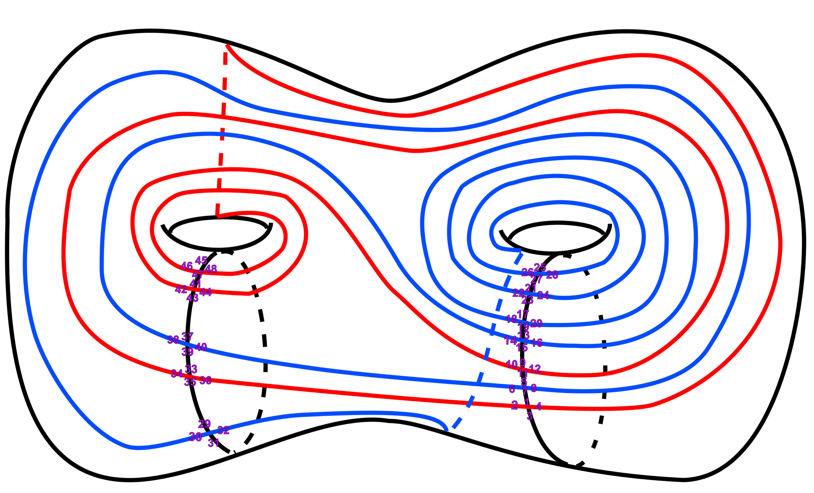

8. BR del Diagrama de Poincaré
Cálculo del polinomio de Bollobás-Riordan para la esfera de Poincaré
El cálculo del polinomio de Bollobás-Riordan para el diagrama de Heegaard de la esfera de Poincaré se realizó con la implementación paralela del script rápido de la sección anterior.

Usamos el sistema de rotación:
\[ \begin{aligned} \sigma &= (1,2,3,4)(5,6,7,8)(9,10,11,12)(13,14,15,16)(17,18,19,20)(21,22,23,24) \\ &\phantom{=} (25,26,27,28)(29,30,31,32)(33,34,35,36)(37,38,39,40)(41,42,43,44)(45,46,47,48) \end{aligned} \]
\[ \begin{aligned} \rho &= (1,7)(2,36)(3,25)(4,48)(5,11)(6,40)(8,30)(9,15)(10,42)(12,34)(13,19)(14,38) \\ &\phantom{=} (16,18)(17,23)(20,22)(21,27)(24,26)(28,32)(29,35)(31,45)(33,39)(37,43)(41,47)(44,46) \end{aligned} \]
Aquí \(V=12\) y \(E=24\), así que la suma recorre \(2^{24}=16{,}777{,}216\) subgrafos.
El exponente de \(z\) es \(2g(A)\) (caso orientable), por lo que aparecen potencias pares de \(z:\)
\[ \begin{aligned} R(G;x,y,z) &= P_0(x,y) + z^2 P_1(x,y) + z^4 P_2(x,y). \end{aligned} \]
\[ \begin{aligned} P_2(x,y) ={}& y^{13} + 24y^{12} + 268y^{11} + 6xy^{10} + 1838y^{10} + 110xy^9 + 8594y^9 \\ &+ 8x^2y^8 + 892xy^8 + 28652y^8 + 108x^2y^7 + 4136xy^7 + 68844y^7\\ &+ 8x^3y^6 + 596x^2y^6 + 11728xy^6 + 116692y^6 + 48x^3y^5 + 1592x^2y^5\\ &+ 19680xy^5 + 129208y^5 + 96x^3y^4 + 1824x^2y^4 + 15712xy^4 + 72480y^4. \end{aligned} \]
\[ \begin{aligned} P_1(x,y) ={}& 8y^{11} + 13xy^{10} + 167y^{10} + 11x^2y^9 + 248xy^9 + 1629y^9 \\ &+ 5x^3y^8 + 207x^2y^8 + 2223xy^8 + 9809y^8 + x^4y^7 + 104x^3y^7 \\ &+ 1809x^2y^7 + 12240xy^7 + 40366y^7 + 30x^4y^6 + 966x^3y^6 + 9458x^2y^6 \\ &+ 45278xy^6 + 118108y^6 + 4x^5y^5 + 370x^4y^5 + 5040x^3y^5 + 31724x^2y^5 \\ &+ 115072xy^5 + 246750y^5 + 118x^5y^4 + 2016x^4y^4 + 15124x^3y^4 + 67448x^2y^4 \\ &+ 195774xy^4 + 356096y^4 + 36x^6y^3 + 598x^5y^3 + 4874x^4y^3 + 24332x^3y^3 \\ &+ 83464x^2y^3 + 201950xy^3 + 312266y^3 + 8x^7y^2 + 100x^6y^2 + 816x^5y^2 \\ &+ 4364x^4y^2 + 16392x^3y^2 + 45244x^2y^2 + 89024xy^2 + 106196y^2. \end{aligned} \]
\[ \begin{aligned} P_0(x,y) ={}& 15y^9 + 49xy^8 + 279y^8 + 91x^2y^7 + 838xy^7 + 2439y^7 + 131x^3y^6+ 1455x^2y^6\\ & + 6745xy^6 + 13133y^6 + 168x^4y^5 + 1950x^3y^5 + 10860x^2y^5+ 32786xy^5\\ & + 47684y^5 + x^7y^4 + 9x^6y^4 + 233x^5y^4 + 2335x^4y^4 + 13241x^3y^4+ 47129x^2y^4\\ & + 103477xy^4 + 120103y^4 + 4x^8y^3 + 40x^7y^3 + 371x^6y^3+ 2652x^5y^3\\ & + 13417x^4y^3 + 48520x^3y^3 + 124093x^2y^3 + 213428xy^3+ 209059y^3\\ & + 6x^9y^2 + 66x^8y^2 + 460x^7y^2 + 2512x^6y^2 + 10823x^5y^2 + 36693x^4y^2\\ & + 96706x^3y^2 + 193034x^2y^2 + 275765xy^2 + 235903y^2 + 4x^{10}y + 316x^8y \\ & + 1520x^7y + 5804x^6y + 18120x^5y + 46428x^4y + 96512x^3y + 158208x^2y \\ & + 191064xy + 48x^9y + 137976y + x^{11} + 13x^{10} + 87x^9 + 403x^8 + 1446x^7 \\ &+ 4222x^6+ 10250x^5 + 20754x^4 + 34617x^3 + 46005x^2 + 44991x + 25627. \end{aligned} \]